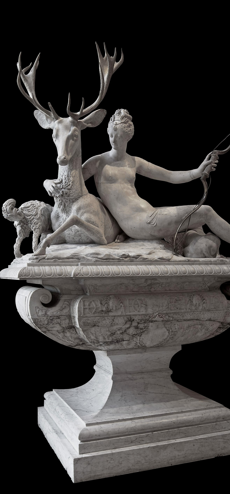

Contexto Social en el País Frances
Con la muerte de Enrique II en 1559, su hijo Francisco II dejó el gobierno a la Casa de Guisa, al duque Francisco de Guisa y al cardenal de Lorena, firmes partidarios del catolicismo. Pero cuyo gobierno generó una oposición que desembocó en la Conjura de Amboise para secuestrar al rey. Ante eso y la creciente conflictividad en el reino entre católicos y hugonotes se buscó una vía de diálogo, pero entretanto, el rey falleció al cabo de diecisiete meses de reinado y le sucedió su hermano Carlos IX bajo la regencia de su madre Catalina de Médici.
A la mitad del siglo XVI el rey Carlos IX falleció y le sucedió su hermano Enrique III. Ante las huidas de la corte de los príncipes supervivientes de la matanza de San Bartolomé: Enrique, príncipe de Condé y Enrique de Navarra, para liderar a los hugonotes, y la deserción de su hermano Francisco de Alençon; el nuevo rey, cercado en París, tuvo que capitular en el Edicto de Beaulieu, que hizo amplias concesiones a los hugonotes. Pero el duque Enrique de Guisa se opuso a la misma y logró constituir la Liga Católica. Y en los Estados Generales de Blois, el rey presionado por los católicos reemprendió una nueva guerra, la sexta (1577), tras la cual, el Edicto de Poitiers restringió al de Beaulieu. El rey designó a su madre para que viajara por el reino para afianzar la paz definitiva, para lo cual se estableció el Tratado de Nérac, que otorgaba a los hugonotes durante seis meses, catorce plazas de seguridad, pero pasado ese tiempo se negaron a reintegrarlas y comenzó la séptima guerra (1579-1580), finalizada en la Paz de Fleix.
En 1589 el rey fue asesinado y le sucedió Enrique de Navarra como Enrique IV. Por su parte la Liga Católica proclamó al cardenal Carlos de Borbón como rey y prosiguieron la guerra con la ayuda española. El cardenal Carlos de Borbón falleció en 1590 y la Liga reunió unos Estados Generales en París para buscar un nuevo soberano. Ante esta situación, Enrique IV hizo pública conversión al catolicismo, lo que aceleró su reconocimiento como rey. Declaró la guerra a España y tras la victoria en la batalla de Fontaine-Française (1595) sometió a la Liga Católica. La paz religiosa llegó en abril de 1598 con el Edicto de Nantes, por el que los hugonotes obtuvieron la libertad de conciencia, la libertad de culto limitada y la igualdad civil con los católicos, y la paz con España llegó apenas un mes después con la Paz de Vervins, por el que fue reconocido como rey de Francia.
Mientras tanto en El Renacimiento
Con la influencia del hacer italiano se destaca Michel Colombe, escultor de la Reina Ana de Bretaña a principios del siglo XVI y que realizó por encargo suyo el sepulcro de sus padres, el duque Francisco II y Margarita de Foix en la catedral de Nantes. En las figuras yacentes del sepulcro todavíase aprecian rasgos góticos, no así en los elementos decorativos y en cuatro figuras de las Virtudes de tamaño natural colocadas en los ángulos del monumento funerario.
Su sobrino Guillaume Regnault, también escultor, le sucedió en el cargo como escultor de la Reina. Su obra maestra son las estatuas yacentes del consejero real Louis Porcher y su esposa, hoy en el Museo del Louvre.
También a principios del siglo XVI, Jean Goujon (llamado el Fidias francés) inició sus trabajos en Ruan, y en 1544 acudió a París para ser nombrado escultor real en 1547, donde realizó numerosos encargos como las alegorías de Las Cuatro Estaciones, las Ninfas, unas Cariátides para la tribuna de los Músicos y realizó los signos del Zodíaco para el antiguo ayuntamiento de París. Por estos mismos años Germain Pilon realizó numerosos monumentos funerarios con gran influencia de Miguel Ángel, entre los que descuella el Cristo Resucitado con figuras de los guardianes, un grupo para la capilla de Enrique II conservado en el Museo del Louvre, cuyas figuras están inspiradas en composiciones pictóricas como el José de Arimatea de Rosso Fiorentino. El Cristo muerto se asemeja a los grabados de Parmigianino, pues las figuras buscan las diagonales y los escorzos son espectaculares, con los pliegues de los vestidos apretados y muy delgados, recordando los relieves de la antigüedad clásica. Fiel seguidor suyo fue su discípulo Bartolomé Prieur, quien trabajó al servicio de Enrique IV de Francia. Pierre Puget, llamado el «Bernini francés», fue ya un escultor tardío del Renacimiento; sobresalió su obra Milón de Crotona.
El Renacimiento en su mayor esplendor.
Hecha un vistazo a a un artista de la epoca y su influencia en esta obra y demas...:
|  |
 Siglo XVI
Siglo XVI